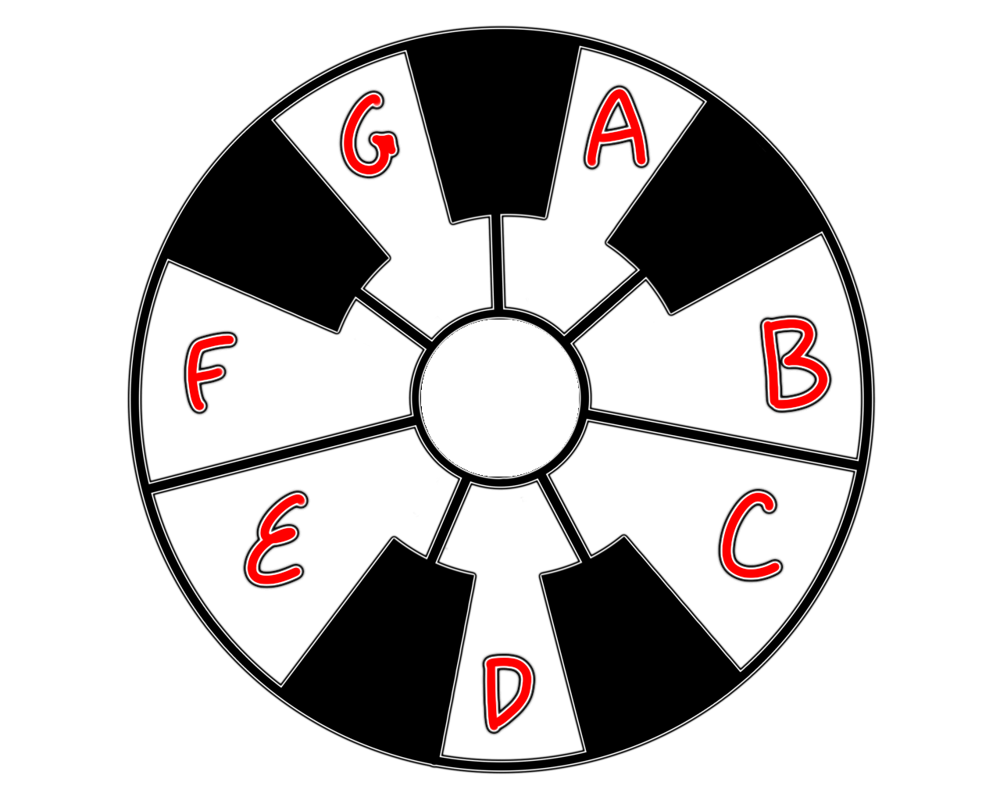

Notes
Musical Alphabet

7 white keys: A B C D E F G
5 black keys, in groups of two & three
Between the two black keys is always the note D
Accidentals
s = sharp = +1
b = flat = -1
n = natural = white key
Enharmonic Equivalence
Overlap in note names
Cs = Db, Ds = Eb, Fs = Gb, Gs = Ab, As = Bb
Black keys are always s or b,
but some white keys can also be s or b.
This is because the keys B & C, and E & F are adjacent,
there are no black keys separating them.
Bs = Cn, Cb = Bn, Es = Fn, Fb = En